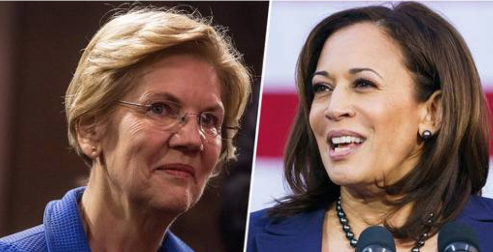
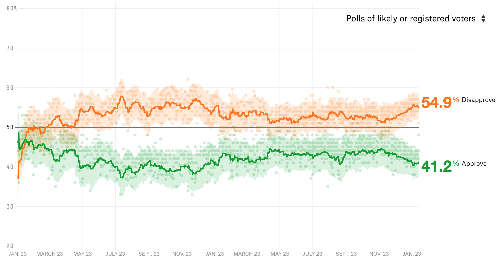

日常印象里，作为一个两党制国家，美国总统选举的舞台上，似乎只有民主和共和两党的候选人。可当我们将的最全面结果选举列出来的时候，却往往会讶异于除了两党候选人外的其他参与者。以2016年的选举结果1为例：
| 总统候选人 | 政党 | 本州 | 民选得票票数 | 民选得票百分比 | 选举人票 |
|---|---|---|---|---|---|
| 唐纳德·约翰·特朗普 | 共和党 | 纽约州 | 62,984,828 | 46.09% | 304 |
| 希拉里·罗德姆·克林顿 | 民主党 | 纽约州 | 65,853,514 | 48.18% | 227 |
| 科林·卢瑟·鲍威尔2 | 共和党 | 纽约州 | 253 | 0.00%3 | 3 |
| 伯纳德·桑德斯2 | 民主党 | 佛蒙特州 | 111,8503 | 0.08%3 | 1 |
| 约翰·理查德·凯西克2 4 | 共和党 | 俄亥俄州 | 2,6843 | 0.00%3 | 1 |
| 罗恩·保罗2 4 | 自由党 | 得克萨斯州 | 1243 | 0.00%3 | 1 |
| 费思·斯波蒂德·伊格尔2 | 无党籍 | 南达科他州 | 0 | 0.00% | 1 |
| 加里·厄尔·约翰逊 | 自由党 | 新墨西哥州 | 4,489,341 | 3.28% | 0 |
| 吉尔·艾伦·斯泰因 | 绿党 | 马萨诸塞州 | 1,457,218 | 1.07% | 0 |
| 大卫·埃文·麦克马林 | 无党籍 | 犹他州 | 731,991 | 0.54% | 0 |
| 达雷尔·莱恩·卡斯特 | 宪法党 | 田纳西州 | 203,090 | 0.15% | 0 |
| 其他 | 834,611 | 0.61% | 0 | ||
| 总票数 | 136,669,276 | 100% | 538 |
暂时按下16年出现的异常状况2先不表，在这个最终结果里，居于榜首的自然是当时两个主角克林顿和Trump。此外，还可以发现还有不少其他政党和独立候选人。虽然他们在这场选举中得票比例，远逊于两个主要政党候选人，更不可能有选举人票，而最终影响选举结果，但看到他们民选票的绝对数量时（自由党的Gary Johnson449万票，绿党的Jill Stein146万票），依然还是会惊叹于他们的依然有上百万的票的影响力。
在美国选民的中间力量（Centrists）受到极端左右翼挤压的今天，两个主要政党本可以像过去半个世纪所发挥的作用一样，作为中间力量的坚定守护者，为中间力量提供温和的政治人物和政治纲领。但无论是本世纪头十年共和党中兴起的茶党运动，还是2015年以来对应兴起的『没有桑德斯的桑德斯主义』，却都不断的将共和和民主两党向极端化的方向推动。2019年新的选举周期开始以来，Trump依然稳定在四成的整体民调和共和党内过七成的支持率，以及民主党当前Warren和Harris为代表的进步主义者声势渐长，更是将这种对于中间力量的压力逐渐推涨。
中间力量们对于这种转变别无他策了么？如果说2016年第三力量的表现和大量出现的选举人失信说明，美国的两党制可能存在松动的空间。那么前星巴克CEO 舒茨在今年1月27日所表达的希望作为独立参选人参选的信息，则让这种可能性在2020年有了落脚点。

历史上的重要参选者
美国的政党制度之所以叫做两党制，原因在于两党之外的其他政治力量，实在过于弱小。自20世纪两党的建制形成以来，其他政党在最关键
的总统竞选中，没有一个获得当选，民选票基本只获得1%~2%左右，选举人票自然几乎不可能获得。
不过历史总有例外，自20世纪以来，有四位非两党的总统候选人，西奥多·罗斯福、罗伯特·拉福莱特、乔治·华莱士和罗斯·佩罗，获得了超过10%的民选票，成为美国两党制政治史中异数。虽然他们大选的最终获得结果相似，但各自所处的时代和所面临的选举情势却有各有区别。
西奥多·罗斯福 Theodore Roosevelt
西奥多·罗斯福，也称老罗斯福，作为总统山四总统之一，可以说是现代美国的奠基者之一。在本文里，他的身份则是以进步党身份参选1912年大选5的候选人。

竞选背景和过程
早在1901年刚当选副总统的他，因为时任总统麦金利被刺杀身亡而接任总统，成为至今最年轻的总统（42岁），开启了1901-1905的第一任任期，并在1905年第一次以副总统接任总统的身份再次赢得选举，开启了他的第二任期。
在1908年即将卸任的前一年，罗斯福就表示不再寻求连任6，并举荐同为共和党的同仁塔夫脱提名参选并赢得1908年大选。不满于塔夫脱就任后一系列亲财阀的保守主义的政策，1912年作为进步主义者的罗斯福在得知塔夫脱寻求连任后，随即宣布再次出选总统。但因为罗斯福开始争取党代表支持提名时，塔夫脱已经获得了超过他的党代表支持数量，罗斯福随即带领共和党内同持进步主义政见的党代表脱党另立，成立进步党参与1912年的大选。
1912年大选可谓是一波三折，时任副总统舍曼在10月竞选开始后不久后随即病逝，塔夫脱就失去了竞选搭档；罗斯福在同一月份也在在竞选活动中被枪击7，但所幸枪击子弹因为放在胸前的钢制眼睛盒子和一叠讲稿，并未进入体内。
罗斯福所带领的进步党随后的活动并未消沉，反而掀起了全国性的运动，一方面谴责塔夫脱偷走了他在共和党的提名，另一方面提出『新民族主义』的概念来整合他一系列的改革政见，即在更为强大的联邦权力下，更好的宏观调控和更严格的惩罚破坏市场规则者。民主党参选人威尔逊则提出『新自由』的政策，希望削弱强势政府，为个人留有更多空间。共和党的塔夫脱的竞选相对更低调，提出法官需要有比民选官员更大的权力，而分裂了的共和党人反而花了更多精力在指责罗斯福的进步党是『危险的激进分子』。

选举结果
| 总统候选人 | 政党 | 本州 | 民选得票票数 | 民选得票百分比 | 选举人 |
|---|---|---|---|---|---|
| 伍德罗·威尔逊 | 民主党 | 新泽西州 | 6,296,284 | 41.84% | 435 |
| 西奥多·罗斯福 | 进步党 | 纽约州 | 4,122,721 | 27.40% | 88 |
| 威廉·霍华德·塔夫脱（现任） | 共和党 | 俄亥俄 | 3,486,242 | 23.17% | 8 |
| 尤金·五·德布斯 | 社会主义党 | 印第安纳 | 901,551 | 5.99% | 0 |
| 尤金·W.·Chafin | 禁酒党 | 伊利诺伊 | 208,156 | 1.38% | 0 |
| 亚瑟·E.·雷默 | 社会主义工党 | 马塞诸塞州 | 29,324 | 0.19% | 0 |

从结果上看，罗斯福所带领的进步党获得了至今未被超越的第二大党的位置，无论民选票数和选举人数都多于第三名，且是至今最高的。
但从竞选一开始，罗斯福虽然因为枪击和之前较好执政表现的而获得了较高的支持度，但旋即就陷入到与共和党候选人塔夫脱的激烈攻击中，进步党本身作为一个共和党内部分裂的结果，其支持者大多也是局限在原有共和党人支持者的范围。民主党候选人威尔逊仅在13个州的得票数大于进步党的罗斯福和共和党的塔夫脱之和，渔翁得利之势非常明显。
罗伯特·拉福莱特 Robert La Follette
罗伯特·拉福莱特作为二十世纪初美国进步主义的主要领袖之一，前威斯康辛州州长，四任参议员，以进步党8领袖身份参与到了1924年大选9。

竞选背景和过程
实质上，拉福莱特早在1912年就参与过大选。1911年共和党开始总统提名初选时，本来只是拉福莱特和塔夫脱之间的竞争。当时已经是共和党内进步主义党团重要领袖的拉福莱特，也不满于塔夫脱第一任期内保守和亲财团的政策，希望挑战塔夫脱获得提名。已经争取到部分支持者的拉福莱特开始时候，希望获得前总统罗斯福的支持，但罗斯福却觉得拉福莱特的政策和党团过于激进，并拒绝了对拉福莱特的支持。1912年共和党党代会开始前，明显趋于劣势的拉福莱特随即退出角逐提名。
前述罗斯福的时候提到过1912年共和党党代会时，罗斯福与塔夫脱在获得提名的党代表数量存在关键差距，而这个关键差距正是拉福莱特。不满于之前罗斯福的拒绝，当罗斯福准备寻求拉福莱特支持时候，拉福莱特也在党代会上领导其党团拒绝支持罗斯福，从而导致了罗斯福的脱党参选。拉福莱特在随后的大选中也表现中立，未支持任何一方。但拉福莱特在本次大选中的表现，也导致了他丧失了进步主义势力领导者的地位。
时间到了1924年，拉福莱特仍然以参议员的身份继续活跃在进步主义阵营，其在进步主义阵营的声望有所恢复。但这个时候，他面对的却是，一方面1912年共和党内的进步主义者势力的分裂，在随后几年罗斯福进步党的解散和向共和党的回归后，有了一定的恢复，但整体进步主义阵营气势和支持率已大不如前；另一方面，随着共和党1920年大选中，以哈定和柯立芝为代表的保守势力代表共和党获得大选胜利，随后柯立芝于1923年又因为哈定的意外死亡而以副总统身份接任总统。二人在任期内较好的执政表现赢得了较高的支持度，到了1924年时，柯立芝以明显优势获得了共和党的提名。这样一来，无论共和党，还是民主党都推出了保守主义的候选人。

进步主义阵营自然无法接受这种境况，同时受到1923年英国工党的第一次获得政权的鼓舞，工会、社会主义者和农民团体形成了进步政治行动会议 (Conference for Progressive Political Action)作为左翼政治团体的整合组织。此时，进一步左转的拉福莱特与CPPA一拍即合，在1924年6月的CPPA代表大会上获得提名参选总统的支持。
选举结果
拉福莱特尽管提出了国家应该兴建农村的道路、电网等基础设施、禁止童工、支持工会、保障公民权、减少对拉丁美洲国家的帝国主义干涉等一揽子进步主义政见，但因其支持者阵营本身就存在内部冲突（劳工和农民群体），与共和党和民主党候选人相比更少的资金支持。与此同时，共和党阵营吸取1912年的教训，将整体选战的攻击对象集中于第三党进步党，提出了『要么柯立芝，要么混乱（Coolidge or chaos）』的竞选口号，直指拉福莱特阵营。
| 总统候选人 | 政党 | 本州 | 民选得票票数 | 民选得票百分比 | 选举人 |
|---|---|---|---|---|---|
| 卡尔文·柯立芝（现任） | 共和党 | 马萨诸塞 | 15,723,789 | 54.04% | 382 |
| 约翰·W·戴维斯 | 民主党 | 西弗吉尼亚 | 8,386,242 | 28.82% | 136 |
| 罗伯特·M.·拉福莱特 | 进步党 | 威斯康星 | 4,831,706 | 16.61% | 13 |
| 赫尔曼·P.·法里斯 | 禁酒党 | 密苏里州 | 55,951 | 0.19% | 0 |
| 威廉·Z.·福斯特 | 共产党 | [马萨诸塞]() | 38,669 | 0.13% | 0 |
| 弗兰克·T.·约翰斯 | 社会主义工党 | 俄勒冈 | 28,633 | 0.10% | 0 |
| 吉尔伯特·南星 | American | 哥伦比亚特区 | 24,325 | 0.08% | 0 |

这样产生的结果就是拉福莱特虽然在整体民选票上以16%的好成绩足以震慑民主和共和两党，但除了本州威斯康辛超过共和党，北达科他和明尼苏达微幅落后之外，全国其他地区均无法对共和党和民主党产生威胁，最终只获得了一州的选举人票。
与此相对，柯立芝领导的共和党在全国获得了35个州的过半票，54%的绝对优势的民选票，继续其执政。
在竞选期间就出现肺炎的拉福莱特在选举结束不久，就马上恶化，并于次年去世。因本次大选成立的进步党则由其儿子拉福莱特二世继承衣钵，一直活跃直到1934年才解散。
乔治·华莱士 George Wallace
不同于前两名候选人进步主义者的身份，乔治·华莱士作为一个阿拉巴马州的州长，却是一个坚定的隔离主义者和民粹主义者。华莱士以美国独立党 10参与的1968年大选11，不仅留下了独立党这个至今存在的极右翼政党，也是因为这次大选产生的政党重组，奠定美国当今政党政治格局的一次大选。

竞选背景和过程
尽管乔治·华莱士于1962年就获选阿拉巴马州州长，但他获得全国性的关注却是因为1963年的挡校门事件。为践行其种族隔离的理念，他领导的阿拉巴马州政府不惜与当时的肯尼迪联邦政府直接对抗，虽然最后无奈让步，但华莱士也因此而名声大噪。

随后华莱士与1964年寻求获得民主党总统候选人提名，但不敌因肯尼迪遇刺而接任的约翰逊未能获得提名。
到了1967年时任总统约翰逊因美国身陷越战泥潭而支持率一落千丈，副总统汉弗莱以尽快结束战争政策主轴随即获得民主党的提名，共和党的尼克松凭借『沉默的大多数』和『立即结束战争（peace with honor“ ）』的口号轻松赢得党内初选。
因种族隔离政策为民主党主流拒绝，华莱士和1967年成立的美国独立党一拍即合，决定以第三党的角色角逐1968年总统大选。实质上，华莱士和独立党都清楚不可能获得全国性的支持而赢得大选，但他们希望凭借这次大选，使得两大政党都无法获得过半选举人票，从而将选举拖入众议院表决，使其能在众议院表决时，对最终总统人选的诞生有发言权，从而表达南方州的立场。
选举结果
| 总统候选人 | 政党 | 本州 | 民选得票票数 | 民选得票百分比 | 选举人 |
|---|---|---|---|---|---|
| 理查德·米尔豪斯·尼克松· | 共和党 | [纽约州]() | 31,783,783 | 43.42% | 301 |
| 休伯特·霍雷肖·汉弗莱 | 民主党 | 明尼苏达 | 31,271,839 | 42.72% | 191 |
| 乔治·科利·华莱士 | 美国独立党 | 阿拉巴马 | 9,901,118 | 13.53% | 46 |

凭借南方州，特别是五个深南州（deep south）对华莱士和独立党的支持，华莱士获得了第三党在总统大选中有史以来最高的选举人票，但其民选票却不及前文所述的两位候选人。
在这次大选中，尼克松虽然获得了选举人上的绝对优势，但从民选票上看尼克松和汉弗莱的结果十分接近。这也从另一个侧面说明了，华莱士除了在深南州的明显优势外，他对于中北部蓝领白人、年轻人也有明显吸引力。同时，他在除了五个胜出州外，还在另外六个州和民主、共和两党有三足鼎立的局势。
本次选举之后，华莱士还角逐了1972年和1976年两次民主党总统的初选提名，虽然都以失败告终，但其惊人的演讲魅力深刻的改变了美国总统选举。其保守主义的理念也为随后的里根和布什所继承。
罗斯·佩罗 Ross Perot
罗斯·佩罗，一个在1992年以独立候选人身份，宣布参选总统前从未有过公共部门经验，但却白手起家创造了一个雇员超过12万，盈利超过192亿美元的电子信息服务公司EDS的亿万富翁。而他参与的1992年大选12时候的美国，面临经济衰退和海湾战争泥淖无法自拔。

竞选背景和过程
从1962年IBM合伙人职位离职创办EDS，到1984年以24亿美元卖出EDS的控股给通用，罗斯·佩罗亿万富翁的成型过程开启了影响至今的硅谷财富成功之路。1984年之后他开启了创投生涯，而他投资名单中最有名的无疑是苹果和微软。
先前就有积极参与公共议题的佩罗，在1990年~1991年因无法说服德州参议员在海湾战争中的法案中投反对票，再加上先前对时任总统老布什的诸多政策无法认同。最终促使他与1992年2月宣布以独立参选人身份角逐总统。
时任总统老布什因成功推动海湾战争，获得高达89%的支持率，虽然共和党内也有挑战者，但都不成气候。民主党方面，失去政权12年已造成选举的中生代力量明显不足，面对老布什极有可能连任的境况，党内的大佬纷纷表达无意参选。而以时任参议员戈尔新生代力量等因种种原因无法参选，最终参与角逐并胜出的克林顿也面临在全国的认知度不够的问题。
与此相对，自二月宣布参选的佩罗在全国媒体对独立参选人的高曝光度下，民调一路上涨，直到六月两党开党代会前，佩罗的盖洛普民调最高达39%，均领先克林顿的25%和老布什的31%。另一方面，佩罗的独立参选也激起了众多中间路线的支持，支持者自发形成的『佩罗上选票（Draft Perot）』运动使其名字都登记上了50个州的选票。

然而，在1992年的六月中旬，因为八零年代末期私下调查布什家族被曝光引来争议，无法与竞选经理无法很好沟通，一直找不到中意的竞选搭档，在演说中针对非裔美国人的演说出现失言（gaffe）而引来新黑豹党的人身威胁等等一系列压力下，佩罗宣布退出竞选。其声望也就此直线下降。尽管其在10月宣布再次加入选战，其民调始终再也无法突破20%。
选举结果
| 总统候选人 | 政党 | 本州 | 民选得票票数 | 民选得票百分比 | 选举人 |
|---|---|---|---|---|---|
| 威廉·杰斐逊·克林顿 | 民主党 | 阿肯色州 | 44,909,806 | 43.01% | 370 |
| 乔治·赫伯特·沃克·布什(现任） | 共和党 | [德州]() | 39,104,550 | 37.45% | 168 |
| 亨利·罗斯·佩罗· | 独立参选人 | [德州]() | 19,743,821 | 18.91% | 0 |
| 安德烈·凡尔纳·Marrou | 自由党 | 阿拉斯加州 | 290,087 | 0.28% | 0 |
| 博·Gritz | Populist | [内华达]() | 106,152 | 0.10% | 0 |
| 莱诺拉·富拉尼 | New Alliance Party | [纽约州]() | 73,622 | 0.07% | 0 |
| 霍华德·菲利普斯 | U.S. Taxpayers Party | 弗吉尼亚州 | 43,369 | 0.04% | 0 |

没有公共部门服务经验且没有竞选经验的佩罗，注定其选战策略就是以获得全国性胜利来制定的，因此其虽然最终获得了19%的民选票，但没在任何一州获得多数票，从而拿到选举人票。在10月宣布再次参选时，民调已经掉到10%以下的佩罗虽然经过一系列辩论中的出色表现，最后获得这样的成绩，可以说最后已经尽最大力了。
另一方面，佩罗仅在一个州领先布什居于第二名，仅在8个州与两党候选人形成均分的状态。其选民构成上均没有在任何维度高于其他两党候选人，没有表现出突出的特征。这一方面说明其支持者的广泛性，一方面也说明他和他的政策没有形成真正的忠实群体。
佩罗随后于1995年创立改革党在此角逐1996年的大选，但更是只获得了个位数的民选票结果。佩罗随后便再无从政的尝试。改革党本身也自此之后彻底的边缘化，成为美国众多默默无闻小党的一员。
2020的情形
回顾完历史之后，我们继续来讨论当下。舒茨，这个一直以民主党身份进行其政治生活，到目前为止没有公职和竞选经验的前CEO，为何要做出独立参选这个决定？他的独立参选之路胜算几率几何？
中间路线
激励舒茨做出独立竞选考量，同时也是1992年佩罗认为存在胜算的立足点，就是下面这份数据：
可以看出，自2008年以来，在政党倾向上偏向独立候选人的注册选民比例出现小幅的上升，从28%上升到37%，并自2013年之后超过偏向民主党的注册选民比例，成为所有选民中占比最大的，似乎中间路线者越来越需要有代表他们的政治人物。
这并不意味着问题就得到解答了，因为还需要面对以下情况：
偏向独立候选人的注册选民比例自1992年以来都在30%左右摆动，整体仍然呈现平稳态的趋势，中间路线者没有大幅增加；
无论是有佩罗这样一度声势高涨的独立参选人，还是其他历次选举中极度边缘的独立参选人，最终大选的结果都表明，这些民调时候表达偏向独立候选人的注册选民，并没有如实在投票的时候表达他们的观点。
面对中间路线在当前政治生态中两相矛盾的境况，有以下几种解释：
- 偏向独立选民的事实假象说。在民调中，受访者存在不希望被了解其政治倾向的状态；以及两党的建制派政治越来越不受欢迎的当下，明确的偏向某一个政党的人会存在社会压力，从而在表达政治观点时隐藏政治偏向。
- 弃保说（spoiler effect）。选民在面对自己希望的候选人没有胜出希望时，不希望自己的票成为废票，从而转投相对更容易接受的其他候选人。
总结来说，当前确实迎来了独立参选人最受欢迎的时候，尽管这个事实还需要更多，更有针对性的证据来支持。佩罗在1992年的事实就证明，假设没有中途退出带来的重大打击，独立参选人是足够与两党候选人进行抗衡的，这构成了舒茨独立参选的基本立足点。
民主党方面
作为一个多数政治活动都集中与民主党相关，并且众多政策理念与民主党重合的政治家，2018年舒茨从星巴克退休后，就一直有寻求民主党提名竞选总统的意向。所以当2019年1月他宣布以独立候选人的身份参选时，激起舆论一片哗然。而他对此的解释是，『当前的民主党内已经愈发显得过于极左』。
是的，Trump的执政却是把民主党往更左的方向推去。以到目前为止正式宣布角逐民主党提名，并且有较高支持度的伊丽莎白·沃伦（Elizabeth Warren）和卡马拉·哈里斯（Kamala Harris）为例。 
沃伦的70%的富人所得税政策，和哈里斯比奥巴马医保方案更激进的取消私人医保政策，都表明2015年在民主党内兴起的进步主义浪潮已经到来，并且明确的体现在了角逐候选的政见中。
但民主党真的就此放弃中间路线（centrist），而全面拥抱进步主义（progressives）了吗？还没到可以判断的时候。尽管2018中期选举中，有以AOC（Alexandria Ocasio-Cortez）为代表的进步主义者获得胜利，并不代表中间路线在民主党内地位的丧失。而真正判断进步主义和中间路线的标准，依然还是民主党的党代会。
Trump
2016年Trump在民选票上的劣势就注定了，到目前为止的执政周期中，他的之窗中上限几乎不可能超过一半；另一方面，甚至到了2019年，Trump的整体民调依然稳定于四成左右，以及在共和党内过七成的支持率。

这说明，Trump尽管面临重重挑战，但获得共和党的提名却还是能够确认的。同时，40%的支持者是不论Trump遇到什么情况，都是其铁票仓。Trump要获得连任，要么能够取得小部分中间路线者的支持（但反对率说明难度很大了），要么他的对手没有他强，这意味着民主党出现分裂，其本可整合的中间路线通过有第三势力卷入战局。
关于非两党参选人的其他
布隆伯格尽管自2018年以来都对自己民主党身份的有积极的认同，并且民主党的中期选举居功甚伟，同时也表达出以民主党身份角逐2020。那为什么不在民主党部分来讲他呢？实质上，布隆伯格是一个非典型的民主党人，更是一个非典型的政客。除了初入政坛和当前是民主党人，他还曾经是共和党和独立参选人。当然，他最为人所知的还是他的公司彭博社、他的亿万家财和他三人纽约市长的从政经历给纽约产生的影响。

布隆伯格的这些非典型特征洽与舒茨遥相呼应，更因为舒茨宣布独立参选后，对舒茨的批评从而将两人对照比较。
布隆伯格与舒茨和佩罗一样，都是在青年时期从商，积累了巨量财富。在金钱上的成功促使他们决心有更强的影响力，从而进入政坛。不同于舒茨和佩罗，甚至Trump，布隆伯格的政治试水的起手式是从纽约市长开始。
2000年竞选成为纽约市长的布隆伯格面对的是纽约市的巨额财政赤字、居高犯罪率，以及随后而来的911。但到了2013年卸任时，财政状况扭亏为盈，犯罪率大幅下降，更将自己诸多进步主义理念融入到了纽约市政。
2016年，已卸任市长的布隆伯格开始考虑以独立候选人身份参选总统，但Trump的迅速窜起使他意识到，他以独立候选人身份参选必定导致挤压民主党候选人的票，从而导致Trump的当选。尽管之后Trump仍然当选，但他依然认为，能够打败Trump的只有民主党，独立候选人的出现必然会使得Trump渔翁得利。
参考
1968~2016年美国总统选举非两党候选人名单
| 总统候选人 | 政党 | 本州 | 民选得票票数 | 民选得票百分比 | 选举人 | 年份 |
|---|---|---|---|---|---|---|
| 加里·约翰逊 | 自由党 | 新墨西哥 | 4,489,341 | 3.28% | 0 | 2016 |
| 吉尔·斯泰因 | 绿党 | 马萨诸塞 | 1,457,218 | 1.07% | 0 | 2016 |
| 埃文·McMullin | 独立参选人 | 犹他州 | 731,991 | 0.54% | 0 | 2016 |
| 达雷尔·卡斯特 | 宪法党 | 田纳西 | 203,09 | 0.15% | 0 | 2016 |
| 伯尼·桑德斯 | 独立参选人 | 佛蒙特 | 111,850[d] | 0.08%[d] | 1 (0) | 2016 |
| 格洛丽亚·拉·里瓦 | 争取社会主义和解放党 | 加州 | 74,401 | 0.05% | 0 | 2016 |
| 罗恩·保尔 | 自由党 | 德州 | 124[d] | 0.00%[d] | 1 (0) | 2016 |
| 加里·约翰逊 | 自由党 | 新墨西哥 | 1,275,971 | 0.99% | 0 | 2012 |
| 吉尔·斯坦 | 绿党 | 马萨诸塞 | 469,627 | 0.36% | 0 | 2012 |
| 维吉尔·古德 | 宪法党 | 弗吉尼亚州 | 122,389 | 0.09% | 0 | 2012 |
| 罗珊娜·巴尔 | 和平自由党 | 夏威夷 | 67,326 | 0.05% | 0 | 2012 |
| 洛基·安德森 | Justice | 犹他州 | 43,018 | 0.03% | 0 | 2012 |
| 汤姆·Hoefling | America’s | 爱荷华州 | 40,628 | 0.03% | 0 | 2012 |
| 安德烈·巴尼特 | 改革党 | 纽约州 | 956 | 0.0% | 0 | 2012 |
| 拉尔夫·纳德 | 独立参选人 | 康涅狄格 | 739,034 | 0.56% | 0 | 2008 |
| 鲍勃·巴尔 | 自由党 | 乔治亚州 | 523,715 | 0.40% | 0 | 2008 |
| 查克·鲍德温 | 宪法党 | 佛罗里达 | 199,75 | 0.15% | 0 | 2008 |
| 辛西娅·麦金尼 | 绿党 | 乔治亚州 | 161,797 | 0.12% | 0 | 2008 |
| 艾伦·凯斯 | America’s Independent Party | 纽约州 | 47,941 | 0.04% | 0 | 2008 |
| 拉尔夫·纳德 | 独立参选人 | 康涅狄格 | 465,65 | 0.38% | 0 | 2004 |
| 迈克尔·Badnarik | 自由党 | 德州 | 397,265 | 0.32% | 0 | 2004 |
| 迈克尔·Peroutka | 宪法党 | 马里兰 | 143,63 | 0.12% | 0 | 2004 |
| 大卫·科布 | 绿党 | 德州 | 119,859 | 0.10% | 0 | 2004 |
| 伦纳德·珀尔帖 | 和平自由党 | 宾夕法尼亚 | 27,607 | 0.02% | 0 | 2004 |
| 沃尔特·布朗 | Socialist | 俄勒冈 | 10,837 | 0.01% | 0 | 2004 |
| 罗杰·卡莱罗 | 社会主义工党 | [纽约州]() | 3,689 | 0.01% | 0 | 2004 |
| 托马斯·Harens | Christian Freedom | [明尼苏达]() | 2,387 | 0.002% | 0 | 2004 |
| 拉尔夫·纳德 | 绿党 | 康涅狄格 | 2,882,955 | 2.74% | 0 | 2000 |
| 帕特·布坎南 | 改革党 | 弗吉尼亚州 | 448,895 | 0.43% | 0 | 2000 |
| 哈里·布朗 | 自由党 | 田纳西 | 384,431 | 0.36% | 0 | 2000 |
| 霍华德·菲利普斯 | 宪法党 | 弗吉尼亚州 | 98,02 | 0.09% | 0 | 2000 |
| 约翰·哈格琳 | Natural Law | 爱荷华州 | 83,714 | 0.08% | 0 | 2000 |
| 亨利·罗斯·佩罗· | [改革党]() | 德州 | 8,085,294 | 8.40% | 0 | 1996 |
| 拉尔夫·纳德 | 绿党 | 康涅狄格 | 685,297 | 0.71% | 0 | 1996 |
| 哈里·布朗 | 自由党 | 田纳西 | 485,759 | 0.50% | 0 | 1996 |
| 霍华德·菲利普斯 | Taxpayers | 弗吉尼亚州 | 184,656 | 0.19% | 0 | 1996 |
| 约翰·哈格琳 | Natural Law | 爱荷华州 | 113,67 | 0.12% | 0 | 1996 |
| 亨利·罗斯·佩罗· | 独立参选人 | [德州]() | 19,743,821 | 18.91% | 0 | 1992 |
| 安德烈·凡尔纳·Marrou | 自由党 | 阿拉斯加州 | 290,087 | 0.28% | 0 | 1992 |
| 博·Gritz | Populist | [内华达]() | 106,152 | 0.10% | 0 | 1992 |
| 莱诺拉·富拉尼 | New Alliance Party | [纽约州]() | 73,622 | 0.07% | 0 | 1992 |
| 霍华德·菲利普斯 | U.S. Taxpayers Party | 弗吉尼亚州 | 43,369 | 0.04% | 0 | 1992 |
| 罗纳德·欧内斯特·保罗 | 自由党 | [德州]() | 431,75 | 0.47% | 0 | 1988 |
| 莱诺拉·富拉尼 | New Alliance | 宾夕法尼亚 | 217,221 | 0.24% | 0 | 1988 |
| 戴维·伯格兰 | 自由党 | 加州 | 228,111 | 0.25% | 0 | 1984 |
| 林登·拉鲁什· | 独立参选人 | 弗吉尼亚州 | 78,809 | 0.09% | 0 | 1984 |
| 索尼娅·约翰逊 | Citizens | 爱达荷州 | 72,161 | 0.08% | 0 | 1984 |
| 鲍勃·理查兹 | Populist | 德州 | 66,324 | 0.07% | 0 | 1984 |
| 丹尼斯·L.·Serrette | New Alliance | 新泽西州 | 46,853 | 0.05% | 0 | 1984 |
| 拉里·霍姆斯 | Workers World | 纽约州 | 46,853 | 0.05% | 0 | 1984 |
| 格斯·霍尔 | 共产党 | 纽约州 | 36,386 | 0.04% | 0 | 1984 |
| 梅尔文·T.·梅森 | 社会主义工党 | 加州 | 24,699 | 0.03% | 0 | 1984 |
| 约翰·贝亚德·安德森 | [独立参选人]() | 伊利诺伊 | 5,719,850 | 6.61% | 0 | 1980 |
| 埃德·克拉克 | 自由党 | 加州 | 921,128 | 1.06% | 0 | 1980 |
| 巴里·布衣 | Citizens | 密苏里州 | 233,052 | 0.27% | 0 | 1980 |
| 格斯·霍尔 | 共产党 | 纽约州 | 44,933 | 0.05% | 0 | 1980 |
| 约翰·Rarick | 美国独立党 | 路易斯安那州 | 40,906 | 0.05% | 0 | 1980 |
| 克利夫顿·DeBerry | 社会主义工党 | 加州 | 38,738 | 0.04% | 0 | 1980 |
| 艾伦·麦科马克 | Right to Life | 纽约州 | 32,32 | 0.04% | 0 | 1980 |
| 莫琳·史密斯 | 和平自由党 | 加州 | 18,116 | 0.02% | 0 | 1980 |
| 哈雷·麦克莱恩 | Natural People’s | 北达科他州 | 18,116 | 0.02% | 0 | 1980 |
| 尤金·麦卡锡 | None | 明尼苏达 | 740,46 | 0.91% | 0 | 1976 |
| 罗杰·麦克布赖德 | 自由党 | 弗吉尼亚州 | 172,557 | 0.21% | 0 | 1976 |
| 莱斯特·马多克斯 | 美国独立党 | 乔治亚州 | 170,274 | 0.21% | 0 | 1976 |
| 托马斯·J.·安德森 | American | 未决定 | 158,271 | 0.19% | 0 | 1976 |
| 彼得·卡梅霍 | 社会主义工党 | 加州 | 90,986 | 0.11% | 0 | 1976 |
| 格斯·霍尔 | 共产党 | 纽约州 | 58,709 | 0.07% | 0 | 1976 |
| 玛格丽特·赖特 | People’s | 加州 | 49,013 | 0.06% | 0 | 1976 |
| 林登·拉鲁什· | U.S. Labor | 纽约州 | 40,043 | 0.05% | 0 | 1976 |
| 约翰·G.·施米茨 | 美国独立党 | 加州 | 1,100,868 | 1.42% | 0 | 1972 |
| 琳达·杰尼斯 | 社会主义工党 | 乔治亚州 | 83,380[f] | 0.11% | 0 | 1972 |
| 本杰明·斯波克· | People’s | 加州 | 78,759 | 0.10% | 0 | 1972 |
| 路易斯·费舍尔 | Socialist Labor | 伊利诺伊 | 53,814 | 0.07% | 0 | 1972 |
| 格斯·霍尔 | 共产党 | 纽约州 | 25,597 | 0.03% | 0 | 1972 |
| 伊夫林·里德 | 社会主义工党 | 纽约州 | 13,878 | 0.02% | 0 | 1972 |
| E.·哈罗德·穆恩 | Prohibition | 密歇根州 | 13,497 | 0.02% | 0 | 1972 |
| 约翰·G.·霍斯珀斯 | 自由党 | 加州 | 3,674 | 0.00% | 1 | 1972 |
| 约翰·Mahalchik | America First | 新泽西州 | 1,743 | 0.00% | 0 | 1972 |
| 乔治·科利·华莱士 | 美国独立党 | 阿拉巴马 | 9,901,118 | 13.53% | 46 | 1968 |
- 得票来源： Leip, David. 2016 Presidential Election Results. Dave Leip’s Atlas of U.S. Presidential Elections. [2016-12-20].；伯尼·桑德斯和约翰·卡西奇：CA: [5] and [6] NH: [7] VT: [8] NC: [9] PA: [10] [return]
- 从失信选举人中取得选票。 [return]
- 候选人取得手写选票，有3个州公布了伯尼·桑德斯实际获得的票数。在加州，他的官方竞选搭档为图尔西·加伯德；在新罕布什尔州及佛蒙特州则没有竞选搭档[230]，桑德斯可能在14个州取得手写选票 [return]
- 2名得克萨斯州的失信选举人分别投票给约翰·卡西奇和荣·保罗：其中Chris Suprun的总统票投给了约翰·卡西奇，副总统票投给了卡丽·费奥瑞娜；另一名Bill Greenez的总统票投给了荣·保罗，不过副总统正常投给彭斯。另外凯西克在佛蒙特州和新罕布什尔州均获得手写选票。 [return]
- https://en.wikipedia.org/wiki/1912_United_States_presidential_election [return]
- 当时美国总统无任期次数限制。 [return]
- 枪击者John Flammang Schrank和事发过程可另行查看。 [return]
- 此进步党与前述罗斯福的进步党不是一个党，为应对1924大选新成立的党。 [return]
- https://en.wikipedia.org/wiki/1924_United_States_presidential_election [return]
- 作为一个为此次大选创立的极右翼政党，至今仍然活跃。 [return]
- https://en.wikipedia.org/wiki/1968_United_States_presidential_election [return]
- https://en.wikipedia.org/wiki/1992_United_States_presidential_election [return]